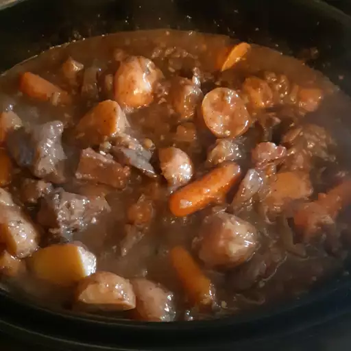

Home
Beef Stew

Image by Allrecipes Member
Recipe by Heather G
Description
This is another one of my favorite dishes. However, it does require a lot of ingredients and time to make. The hot stew is perfect on cold or rainy days. The stew is very flavorful and tasty. The meat and carrots also come out very soft from being slow cooked. The dish can either be made overnight or in the morning because it takes so long to make.
Ingredients
- 3 pounds of beef
- 1/4 cup of flour
- 1/2 teaspoon of salt
- 3 teaspoons of olive oil
- 3 tablespoons of Worcestershire sauce
- 1 pound of carrots
- 4 large potatoes
- 1 tablespoon dried parsley
- 1.5 teaspoons of ground black pepper
- 2 cups of boiling water
- 2 envelopes of onion soup mix
- 3 tablespoons of butter
- 3 large onions
- 2 tablespoons of minced garlic
- 1/2 cup burgundy wine
- 2 packages of mushrooms
- 1/4 cup of warm water
- 3 tablespoons of cornstarch
Steps
- Coat the beef in flour and salt using a bag.
- In a skillet under medium heat combine beef and Worcestershire sauce, cook beef until brown.
- Transfer beef into a slow cooker, add carrots, potatoes, parsley, and pepper.
- Combine boiling water and soup mix in a bowl, then add to slow cooker.
- Melt butter in a skillet and cook onions and garlic then transfer to the slow cooker.
- Put wine and mushrooms in the skillet, let mushrooms absorb the wine and then add to the slow cooker.
- Set slow cooker to high and cook for 1 hour then set the cooker to low and cook for another 6 to 8 hours. Stir warm water and cornstarch into the stew for 15 minutes.